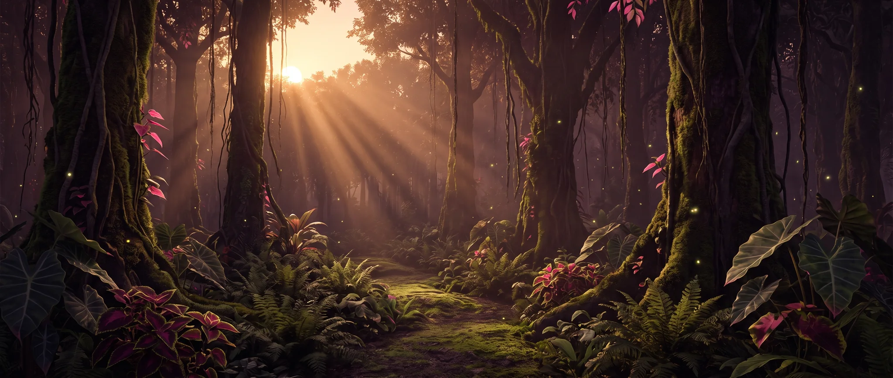
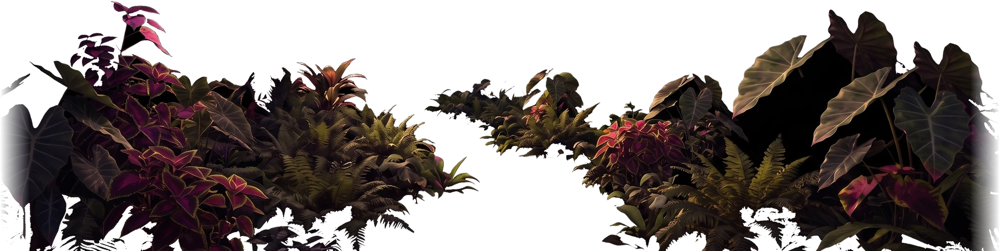
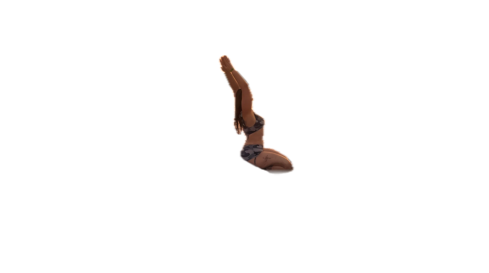
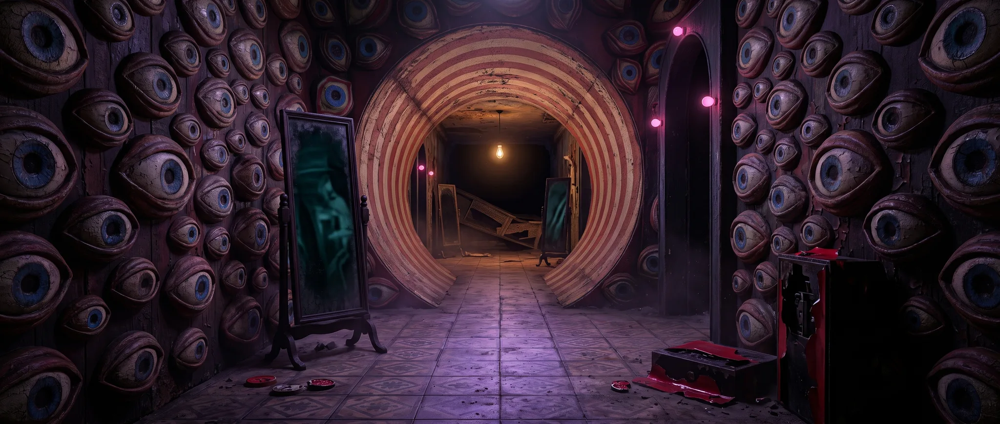
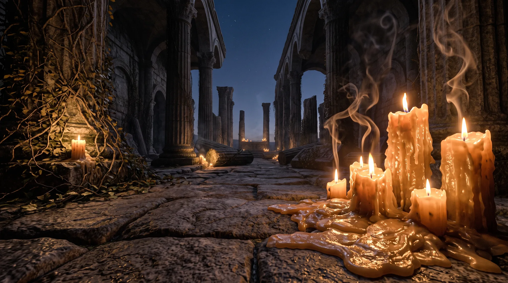
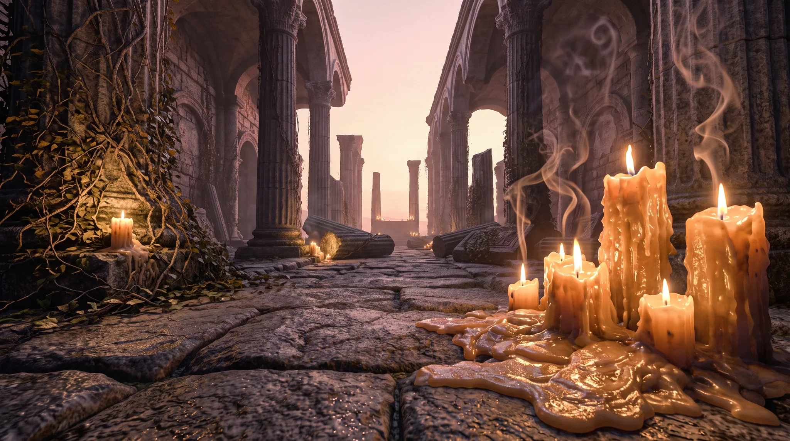

scroll to step through
the easy way in.
morning, traveller - you walked the whole of it.
the forest, the sea, the funhouse, the quiet room.
you stayed, so the light came back.
stay for the whole night and the morning is yours.


roam my forests — something is moving in the leaves.
scroll to drift on

swim my seas — touch the water, and keep drifting: it gets deeper.
scroll to sink under

get pleasantly lost — every mirror remembers a different Diana.
scroll toward the light


the quiet room — touch a candle, and keep still: dawn is close.
morning finds Dianaland — you stayed until the light came back.
drift forward · scroll back to return